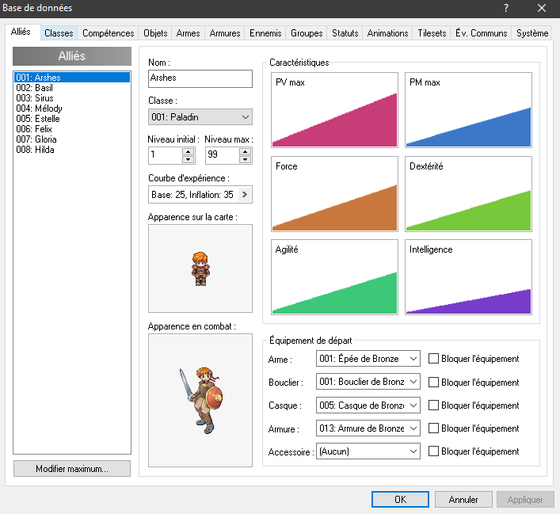
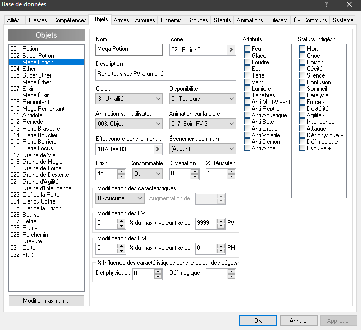
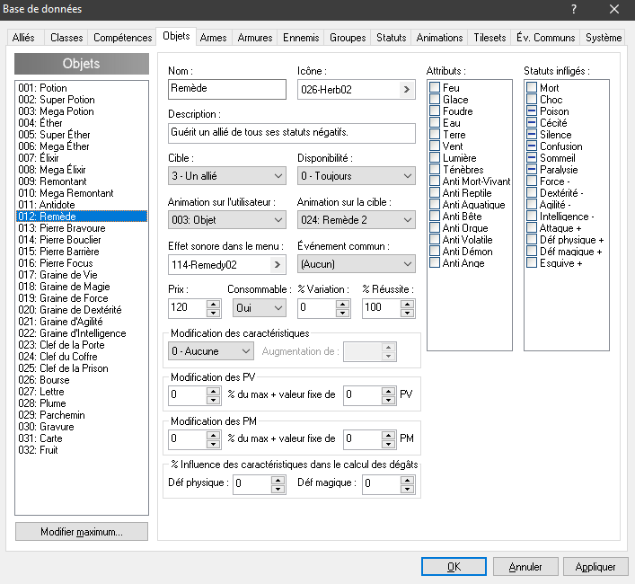
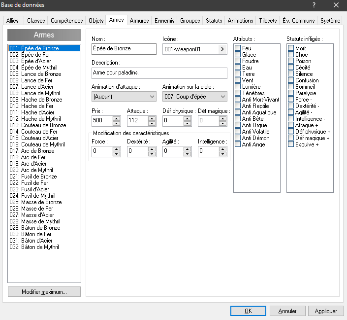
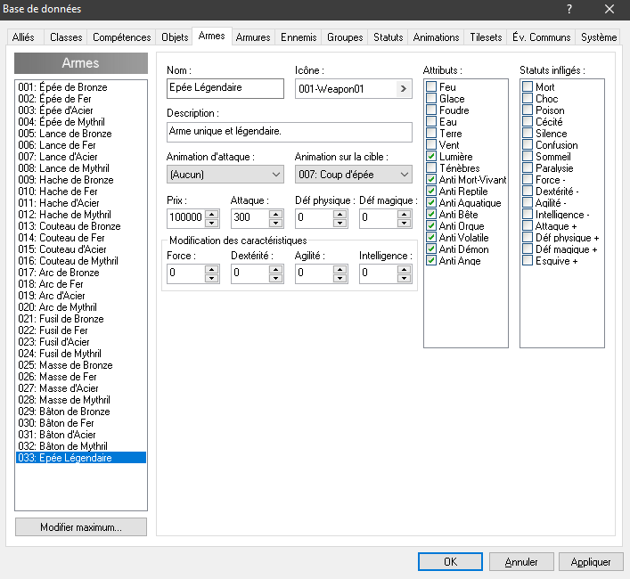

Nous allons désormais aller plus loin en découvrant l'outil "base de données", cet outil permet
de modifier tout le contenu interne de votre jeu. Nous avons vu précedemment l'emplacement de
l'outil, une fois que vous avez cliqué dessus vous devriez arriver sur une page similaire à
celle-ci.

Cliquez ensuite sur l'onglet
"Objet" en haut.
Nous allons prendre l'objet
"003: Mega Potion" et l'analyser, comme vous pouvez le voir cette potion
possède ses propres caractéristiques, elle coûte 450 pièces d'or dans le commerce, à un taux de
réussite de 100% et soigne son utilisateur de 9999 points de vie.

Prenons maintenant l'objet
"012: Remède", nous pouvons voir à droite dans la colonne
"Statuts
infligés :" que les cases poison, cécité, silence, confusion, sommeil et paralysie sont précédés
d'un symbole négatif, cela signifie que si votre joueur était porteur d'un de ces statuts, il lui
sera retiré.

Rendons nous désormais dans la catégorie
"Armes".

Il existe des armes prédéfinis dans le logiciel, cependant nous pouvons en rajouter si nous le
désirons, pour cela il faut se rendre en bas à gauche et cliquer sur
"Modifier maximum...",
augmentez la variable quantité à 33 puis sélectionnez
"OK". Nous venons de créer un nouvel objet.
Pour l'exemple nous allons créer une épée légendaire. Nous cliquons donc sur l'objet créé puis
remplissons les caractéristiques que nous voulons lui donner.

En l'occurence nous venons de créer notre nouvel objet, que nous avons appelé "Epée Légendaire" qui
a pour description
"Arme unique et légendaire", qui se vend dans le commerce pour 100 000 pièces
d'or, qui fait 300 points de dégats et qui possède les attributs Lumière, Anti Mort-Vivant, Anti
Reptile, Anti Aquatique, Anti Bête, Anti Orque, Anti Volatile, Anti Démon et Anti Ange.
Dans le prochain tutoriel nous verrons comment utiliser l'éditeur de script avec le langage Ruby.